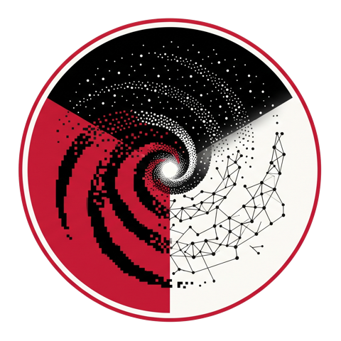
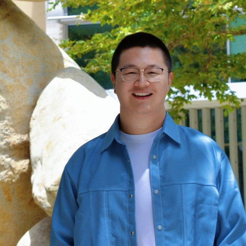
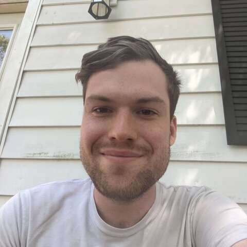
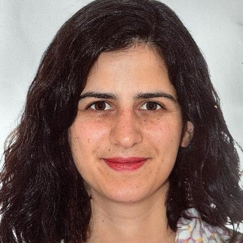
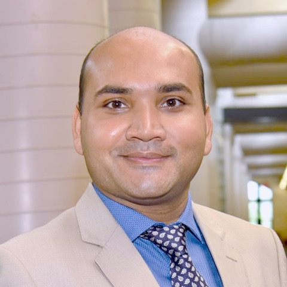
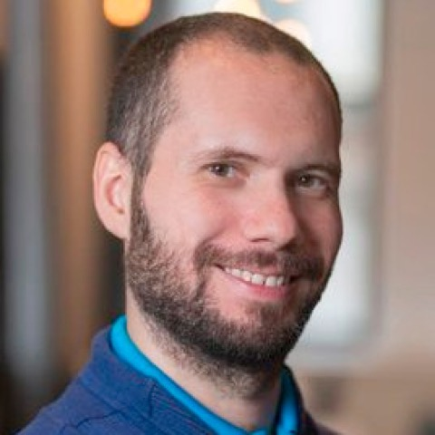

Foundation Models &
Agentic Methods for
Astrophysical Simulation
A KAAI Workshop · Carnegie Mellon University
Overview
About the workshop
Astrophysics and cosmology increasingly rely on large-scale simulations to connect theory with noisy, high-dimensional, unstructured observations. Two developments are making that connection more tractable. Foundation models, which learn transferable representations from large, heterogeneous datasets, are a natural fit for representing, compressing, and analyzing astrophysical data. Agentic methods, meanwhile, are beginning to reshape scientific workflows, expanding analysis capacity while raising open questions about how such tools can be used responsibly in astronomical research. Both directions face challenges: foundation models are limited by scarce ground-truth data and simulations, while agentic methods must contend with tasks that are often non-verifiable or computationally expensive. This workshop brings together researchers working on both fronts to discuss these challenges and where the field is headed.
- Foundation models for astrophysics: representing, manipulating, compressing, comparing, and interpreting astrophysical data, from simulations to observations.
- Agentic science loops: how agentic methods can responsibly augment the astronomical research process.
This is a Keystone Astronomy & AI (KAAI) Fellows Program workshop, sponsored by the Simons Foundation Targeted Grant to Institutes.
Registration
Registration
Registration is now closed.
If you still need to attend, email matthew.annam.ho@gmail.com.
Location
Location & Directions
All workshop meetings will be held in Wean Hall 8330, Carnegie Mellon University.
Wean Hall
Carnegie Mellon University
5000 Forbes Avenue
Pittsburgh, PA 15213
Directions to Room 8330
- Enter Wean Hall through the main entrance on the 5th floor (view entrance location on Google Maps).
- Take the main elevators or central stairs up to the 8th floor.
- Follow the hallway signs to Room 8330 (Department of Physics / McWilliams Center).
Format
Conference + Hackathon
Mon–Tue · Aug 31–Sep 1
Conference
Invited talks and discussion on novel research at the intersection of foundation models, agentic methods, and astrophysical simulation.
Wed–Thu · Sep 2–3
Astro+AI Hackathon
A Pittsburgh-wide hackathon across physics and ML. See below for details.
Schedule
Schedule
View detailed schedule
Monday, August 31 · Conference Day 1
| 9:00 – 9:15 am | Welcome & introductionWelcome & Introduction | Matthew Ho |
| 9:15 – 10:15 am | Invited talkKnowledge-guided Machine Learning: A Paradigm Shift in Advancing Artificial Intelligence by Incorporating Scientific KnowledgeThis talk will introduce knowledge-guided machine learning (KGML), a rapidly growing area of research in AI/ML where scientific knowledge is deeply integrated in machine learning frameworks to produce scientifically grounded, interpretable, and generalizable solutions even on out-of-distribution data. This talk will present the landscape of research in KGML by characterizing previous research in this area in terms of the nature and format of scientific knowledge used, the form of knowledge-ML integration explored, and the method for incorporating scientific knowledge in ML for diverse scientific use-cases. The talk will illustrate KGML methodologies in the context of a variety of use cases spanning multiple scientific disciplines including aquatic sciences, biodiversity science, agriculture, virology, fluid dynamics, and physics. This includes modeling the quality of water in lakes across the US and discovering novel biological traits of organisms linked with evolution from biodiversity images. The talk will conclude with a discussion of emerging opportunities in KGML especially in the light of recent advances in generative AI, Foundation models, and agentic AI with potential applications in a broad range of scientific disciplines. | Anuj Karpatne |
| 10:15 – 10:35 am | Contributed talkA Shared "Language" for Simulated Universes: Foundation Representations for Galaxy Catalogs | Xiaowen Zhang |
| 10:35 – 11:05 am | Coffee break | |
| 11:05 am – 12:05 pm | Invited talkSELDON: A Foundation Model for TransientsNext generation transient discovery surveys require accurate real-time analysis of evolving transients for followup prioritization from other surveys. SELDON (Supernova Explosions Learned by Deep ODE Networks) is a transient foundation model designed with this capability in mind, and more. Our model not only provides classifications and forecasts for the future evolution of transient light-curves – providing estimates for optimal follow-up observing windows – but also approximates the underlying spectral energy distribution, redshift, and even some characteristics of the observing instrument itself. The architecture itself offers a flexible approach to multi-modal astrophysical data analysis, with physically motivated decoding built upon both intrinsic physical properties of transient evolution as well as the physical engineering behind the observing instrument itself, and time-invariant latent representations of transients that can be adapted for downstream tasks. | Jack O'Brien |
| 12:05 – 12:20 pm | Contributed talkAI-powered inference for binary evolution modeling | Katie Breivik |
| 12:20 – 1:50 pm | Lunch break | |
| 1:50 – 2:50 pm | Invited talkScientific Foundation Models: Representations, Capabilities and the Search for New PhysicsThe name "foundation model" has become widespread. In astrophysics it usually means unsupervised representation learning at scale: models like AION learn structured latent spaces from heterogeneous survey data, enabling similarity search for rare objects, outlier detection. Outside of astrophysics, the word may mean something stronger: a language model can be pointed at almost any task, reasoning about it, writing code, acting over long horizons. In this talk I will present two separate projects on the trouble foundation models have telling what they know from what they have absorbed. The first addresses the fact that a data-driven representation model encodes instrument systematics in the same space as the physics. We train a dual-encoder architecture with a counterfactual generation objective, learning what a galaxy would look like through another instrument. On cross-matched HSC and DESI Legacy images, we show how this separates intrinsic properties from instrumental distortions, and its effect on downstream tasks. The second project was designed to answer the question: can a language model discover physics it was never taught? Static question-and-answer benchmarks are especially poorly suited to this: they reward retrieving a known answer, whereas the scientific method resembles more an interactive loop of proposing a hypothesis, designing an experiment to test it, and revising it. We built DiscoverPhysics to evaluate that loop directly. It presents an agent with simulated worlds whose laws deviate from our own, and the agent must run experiments, observe raw trajectories, and submit both an explanation and an implementation of the law it inferred. The strongest models pass only half the worlds, and predictive accuracy turns out to be a poor proxy for understanding. I will close with early results on turning DiscoverPhysics into a reinforcement learning environment, where the simulator provides verifiable rewards (RLVR) for training models to reason about physics. | Carolina Cuesta-Lazaro |
| 2:50 – 3:05 pm | Contributed talkTelescoping Superresolution for Cosmological Simulations | Matthew Ho |
| 3:05 – 3:20 pm | Contributed talkRecovering Subhalos in Dark-Matter Super-Resolution by Gathering Particles into Bound ClumpsDark-matter super-resolution models can accurately reproduce large-scale structure while missing most of the gravitationally bound subhalos within larger host halos. We find that this deficiency does not necessarily reflect missing information: after targeted fine-tuning, SR2 recovers the high-resolution subhalo abundance and mass distribution, suggesting that it already infers how much substructure should form but ordinarily leaves the relevant particles over smoothed. We study the reconstruction of realistic subhalos when mapping a low-resolution Lagrangian displacement–velocity field to a high-resolution dark-matter field. Rather than changing the architecture or predicting a separate halo catalog, we directly fine-tune the SR2 generator while freezing its critics. Shared Lagrangian particle identities allow us to identify the particles belonging to each high-resolution subhalo and apply supervision only to those particles. High-resolution-referenced losses encourage them to gather into physically sized, compact clumps with the appropriate balance between spatial concentration and velocity dispersion. The objectives constrain virial balance, position–velocity compactness, physical radius, velocity dispersion, and formation center. A complementary small-scale power loss limits drift in regions without subhalo supervision. For one held-out host, baseline SR2 produces 20 subhalos within the virial radius, compared with 374 in the high-resolution simulation. Fine-tuning increases this to 367, or 98% of the reference count, while closely reproducing the subhalo mass distribution. These results show that particle-targeted physical supervision can restore substructure that a globally trained super-resolution model otherwise smooths away. | Yixi Zhao |
| 3:20 – 3:50 pm | Coffee break | |
| 3:50 – 4:05 pm | Contributed talkMeta-learning methods for multiple prediction of cosmologiesLearning to predict several cosmological parameters from observations faces several challenges, including the high computational costs of training multiple regression models and unavailability of sufficient data. In this talk we recommend solving both of these challenges using a meta-learning approach. We first discuss theoretical guarantees that enable well-tuned optimisation algorithms to exploit the similarity between different tasks. We then discuss theoretical and empirical results on meta-learning methods to learn such optimisation algorithms. We then discuss the role of simulators in alleviating the challenge posed by the absence of paired observation-parameter data in practice. We discuss ongoing work and meta-learning methods to learn to address the resulting distribution shift between cheap and accurate simulations. | Saumya Goyal |
| 4:05 – 5:05 pm | DiscussionFoundation Models | |
Tuesday, September 1 · Conference Day 2
| 9:00 – 10:00 am | Invited talkA Foundation Model for Multi-Physics Fluid Dynamics via Vision In-Context Operator NetworksMachine-learning surrogates for fluid dynamics are typically trained for a particular physical regime, discretization, and sampling protocol. VICON is a vision in-context operator network that learns across multiple fluid systems with a single set of weights. At inference time, a small number of example input-output pairs from a new system are provided as context, allowing VICON to implicitly identify the system dynamics and forecast its evolution without fine-tuning. The model uses patch-wise tokenization of two-dimensional fields and is trained jointly across incompressible Navier-Stokes and two compressible-flow regimes, including an effectively inviscid regime closely related to the Euler systems used in astrophysical hydrodynamics. This in-context formulation also accommodates varying timestep strides and missing frames without retraining or interpolation, with substantially less accuracy degradation than fixed-timestep baselines. I will close with recent work extending this direction from learned simulation models to scientific agents: Foam-Agent, which automates OpenFOAM workflows from natural-language specifications, and SimulCost, which studies the computational cost of agents tuning simulation parameters. | Yadi Cao |
| 10:00 – 10:20 am | Contributed talkProbing physical symmetries and properties in embedding spaces of astronomical foundation models | Anshul Kumar |
| 10:20 – 10:35 am | Contributed talkArchitecture discovery through an automated Neural Architecture Search frameworkAdapting general AI architectures for biological foundation models often leads to suboptimal performance, as these repurposed designs struggle to capture biology's unique structural properties. To address this, we introduce BioArc, a framework that uses Neural Architecture Search (NAS) for automated, principled architecture discovery. BioArc systematically explores vast design spaces across multiple modalities to identify high-performing architectures and distill empirical design principles. Furthermore, we propose efficient methods for predicting optimal architectures for new tasks, providing a foundational resource for creating next-generation biological models. The same mismatch arises in cosmology tasks: generic graph networks miss CosmoBench structure in galaxy point clouds. We introduce CosmoARC, a BioArc-style search over YAML stacks of periodic graph constructors, encoder blocks, and task-level readouts, with scientific operators (pairwise and inverse-power LLS, two-point functions, mesh P(k), etc.) as first-class blocks. On CosmoBench, we achieve SOTA on the velocity prediction tasks, and comparable performance on parameter estimation and merger tree tasks. We also discover new paths through our NAS architecture. | Zhenyu Bi and Yi Fang |
| 10:35 – 11:05 am | Coffee break | |
| 11:05 am – 12:05 pm | Invited talkThe Denario project: Deep Knowledge AI Agents for Scientific DiscoveryScience advances by formulating and testing hypotheses, collecting and analyzing data, and drawing conclusions—yet much of a scientist’s time is spent in tasks such as coding analyses, writing and revising text, reviewing the literature, and learning new concepts. Can recent advances in AI help reclaim some of that time? In this seminar, I will show how large language models and AI agents may help scientists with these tasks. I will first describe what AI agents are and discuss their applications in science. Next, I will present Denario, a complex, publicly available, multi-AI-agent system designed to function as a research assistant. Developed and evaluated by a diverse team of scientists, mathematicians, and philosophers, Denario is an interdisciplinary tool capable of generating ideas, searching the literature, developing research plans, writing and executing code, crafting plots, and drafting and reviewing scientific papers. I will then show how a swarm of Denario agents can operate in parallel: developing scientific ideas, formulating hypotheses, designing research plans, writing and running code, analyzing results, generating plots, drafting papers, and producing referee-style evaluations that guide subsequent iterations. This swarm-based workflow allows many research directions to be explored simultaneously, with each agent refining its own line of inquiry while contributing to a broader, structured map of ideas, results, and evaluations. I will also present and discuss some of the papers already generated by Denario in disciplines such as astrophysics, biology, biophysics, biomedical informatics, chemistry, machine learning, material science, mathematical physics, medicine, neuroscience, planetary physics, and quantum physics. I will close by discussing how tools like Denario may help researchers accelerate scientific research and invite the audience to a broad discussion on the benefits and risks of this technology. | Francisco Villaescusa-Navarro |
| 12:05 – 12:20 pm | Contributed talkAgentic Systems for Calibrating Cosmological Simulations | Chaipat Tirapongprasert |
| 12:20 – 1:50 pm | Lunch break | |
| 1:50 – 2:50 pm | Invited talkInfrastructure for Science that Compounds in the Age of AI AgentsAI agents that autonomously conduct research risk breaking a delicate balance in science. The scientific paper is a lossy format: methodological choices and assumptions compressed into a few pages, with peer review and community scrutiny providing the warrant that results are sound. This trade-off worked because the rate of new work stayed roughly matched to the community's capacity to scrutinize it. Agents now threaten that balance, accelerating production far faster than scrutiny can keep up and deepening an already well-documented trust and reproducibility crisis. But the same technology is also an opportunity: agents can document exactly how results are produced at a level of detail that was previously too onerous to maintain by hand, if we build the infrastructure to capture it. Closing that gap is what we're building toward at Lightcone Research, a new initiative between UC Berkeley and the French National Centre for Scientific Research (CNRS). We are building a new standard ensuring that conforming analyses are not only reproducible by default, but also inspectable, verifiable, and extendable — every result traceable to the assumptions that produced it, decisions substitutable without rewriting entire pipelines, and analyses able to cite and build upon one another. Done right, this is what allows AI-powered science to remain trustworthy and continue to compound. Because infrastructure of this kind has to be built with and for the community that relies on it, our project is open-source, collaborative, and designed for shared stewardship from the start. In this talk, I will survey the current state of agentic AI in science and the pitfalls it is exposing, introduce the Lightcone Research project and its agentic research stack, as well as share lessons from working with UC Berkeley early testers and reproducing flagship cosmology results. | Francois Lanusse |
| 2:50 – 3:20 pm | Coffee break | |
| 3:20 – 3:35 pm | Contributed talkAG-GeN: Diffusion Modeling Artificial Astronomy Image DataGalaxy mergers are important processes in the universe, thought to trigger active galactic nuclei (AGN), enhance star formation, fuel the growth of supermassive black holes (SMBH), and contribute to the gravitational wave background. We previously developed the DRAGON tool (Data Reduced AGN and Galaxy Optical Network), a convolutional neural network (CNN) for identifying these mergers at various stages, helping us to understand their rate. However, the model’s ability to identify mergers was hampered by the dearth of available training data. Galaxy mergers require computationally intensive simulations to model, and may in any case not be sufficiently similar to real telescope data. To address this, we developed AG-GeN (Astronomical Graphical Generative Network), a diffusion model for generating realistic telescope images of galaxy mergers. AG-GeN is a LoRA (Low-Rank Adaptation) model built on Stable Diffusion 1.5, a general-purpose image generator already capable of producing galaxy-like images. LoRAs are lightweight models that fine-tune features within larger models like Stable Diffusion. We trained two AG-GeN models on data from the Hyper-Suprime-Cam instrument on the Subaru telescope and the Euclid telescope, respectively, enabling Stable Diffusion to generate realistic merger data. We then tested DRAGON version 1.0’s ability to identify the synthetic images produced by AG-GeN as mergers and found that with optimal prompting, it is able to identify $\sim72$\% of our artificial mergers correctly. We also show data from AG-GeN can be used to improve the training process of search algorithms like DRAGON by expanding small datasets. The method AG-GeN establishes could prove to be a new and viable way to generate artificial data for rare objects, whether they’re merging galaxies or cell types. | Sean Lewis |
| 3:35 – 3:50 pm | Contributed talkDegeneracy-Aware Pulsar Parameter Estimation from Light Curves using Flow-Based TechniquesWe present a simulation-based inference framework using conditional flow matching (CFM) to estimate the physical parameters of neutron star hot regions from X-ray pulse profiles, with application to NICER observations of PSR J0030+0451. We use a transformer encoder which compresses each 64-bin light curve into a 128-dimensional context vector. The context vector then conditions a residual vector-field network trained via flow matching to generate posterior samples over eleven physical parameters, namely, source positions, magnetic colatitudes, phases, and the secondary-to-primary field-strength ratio. The model is trained on 10 million simulated light curves and posterior samples are drawn by integrating the learned ODE with a Runge–Kutta solver. On a held-out set of 10,000 simulated light curves, the model's uncertainty estimates are well-calibrated: the true parameter values fall within the model's predicted 68% confidence range close to 68% of the time, consistent across all eleven parameters and confirmed by several calibration checks. When posterior samples are pushed back through an independent forward simulator to reconstruct the input light curve, the true light curve falls within the predicted band 65–75% of the time, for both simulated and real observations. We further screen 100,000 simulated light curves to characterize failure modes, identifying which regions of parameter space and light-curve morphologies are responsible for poor reconstructions. Applied to the real PSR J0030+0451 NICER light curve, we validate CFM-derived posterior against an independent nested-sampling MCMC posterior, showing broad agreement across the eleven-dimensional parameter space. These results demonstrate flow matching as an efficient, well-calibrated approach to enable rapid posterior estimation as compared to traditional sampling-based methods. | Sayed Shafaat Mahmud |
| 3:50 – 4:50 pm | DiscussionAgentic Workflows | |
Wednesday, September 2 · Hackathon Day 1
| 9:00 – 10:00 am | Welcome, Track Description, Team Formation | |
| 10:00 – 10:30 am | Coffee break | |
| 12:30 – 2:00 pm | Lunch break | |
| 3:00 – 3:30 pm | Coffee break | |
| 4:30 – 5:00 pm | Wrap Up | |
Thursday, September 3 · Hackathon Day 2
| 9:00 – 10:00 am | Tag Up | |
| 10:30 – 11:00 am | Coffee break | |
| 12:30 – 2:00 pm | Lunch break | |
| 3:00 – 5:00 pm | Final Presentations, Scoring, and Prize Awarding | |
Speakers
Invited speakers
François Lanusse
Researcher · CNRS

Yadi Cao
Assistant Professor · University of Central Florida

Jack O’Brien
Postdoctoral Researcher · UIUC

Carolina Cuesta-Lazaro
Assistant Professor · New York University

Anuj Karpatne
Professor · University of Florida

Francisco Villaescusa-Navarro
Research Scientist · CCA, Flatiron Institute
Hackathon
Astro+AI Hackathon
A Pittsburgh-wide hackathon across physics and machine learning. Teams tackle one of three tracks using real galaxy survey and simulation data.
View hackathon slidesRobust Cosmological Inference
You are given a galaxy catalog dataset with cosmology labels. Train a regressor that stays accurate under distribution shift: at test time, the data is subject to known and unknown shifts, such as added noise or feature ablation. Teams are scored on inference accuracy under each shift.
Winners
First Place Fatemeh Hafezianzadeh, Hannah Skobe, Sofia Splawska
Agentic Simulation-to-Observation Mapping
You are given a simulated galaxy catalog and its observed counterpart. Recover the sequence of transformations that maps the simulation to the observation, using agentic methods, your own intuition, or both. Teams are scored on the correctness of the recovered pipeline.
Winners
First Place Emma Yu, Pragati Bhattad, Nick Kuo
Second Place Eason Wang
Foundation Model Feature Discovery
You are given galaxy postage stamps and their AION foundation model embeddings. Look for physically meaningful structure in the data. The track starts with guided questions that reproduce known results, then opens into free exploration, such as testing the effect of telescope quality or comparing simulations to observations.
Winners
Top Three Chaipat Tirapongprasert, Eason Wang
Top Three Shafaat Mahmud, Sean Lewis, Mohd Danish Multani
Top Three Jack O'Brien, Murman Gurgenidze
- Teams: up to 3 people. No team yet? We will help you form one Wednesday morning.
- Kickoff: Wed, 9–10am. Track descriptions, provided data, compute resources, and evaluation metrics.
- Presentations: Thu afternoon. Each team gives a 5-minute presentation, factored into scoring. At least one team member must present in person.
- Prizes: gift cards, compute credits, and other prizes, awarded per track.
Committee
Organizing committee
Columbia University, Department of Astronomy
Carnegie Mellon University, Machine Learning Department
Carnegie Mellon University, Department of Physics
Carnegie Mellon University, Department of Physics
Carnegie Mellon University, Department of Physics
Carnegie Mellon University, Department of Physics
Xiaowen Zhang
Carnegie Mellon University, Department of Physics
Anshul Kumar
Carnegie Mellon University, Heinz College of Information Systems and Public Policy